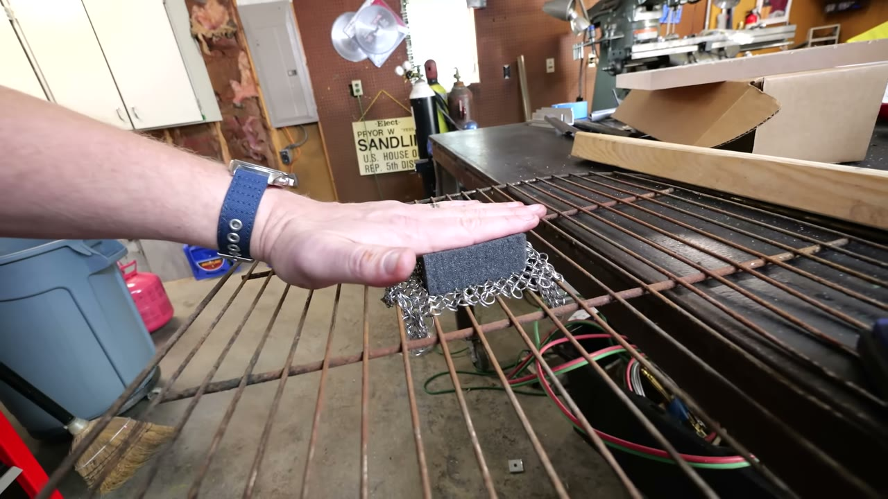
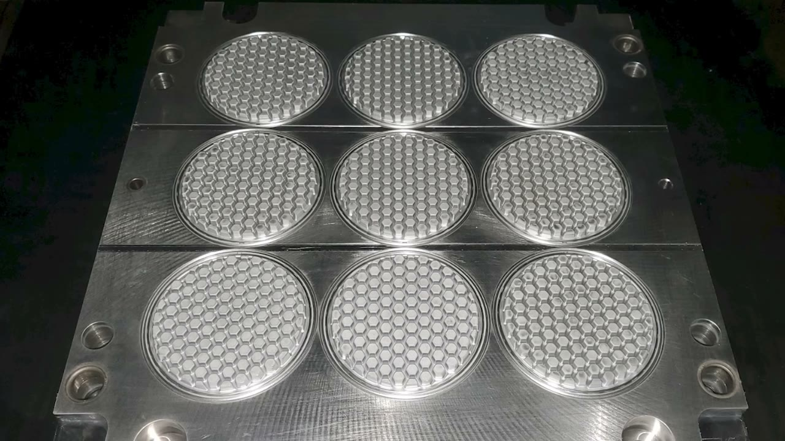
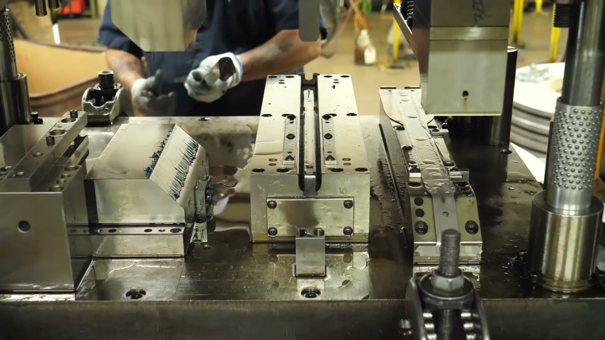
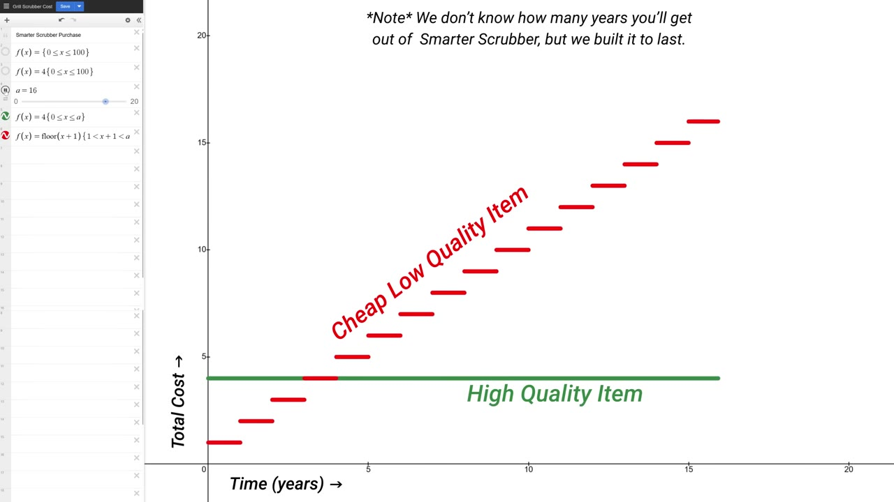

Start here
The overview
Destin Sandlin and John Youngblood set out to manufacture a chain-mail grill scrubber in America. The attempt produces a working product, but also repeated design changes, unexpectedly expensive components, reliance on specialist mentors, and imported parts they cannot yet replace. This reading follows the engineering and sourcing decisions through to the openly promotional final pitch, retaining the limits on heat tolerance, product origin, and the durability-based savings argument.
What the snapshots add
- Seventeen inspected snapshots cover the compliant backing, prototype parts, chain-mail weaves, tooling, heat-test aftermath, supply-chain packaging, and final product demonstration.
- The cost-chart snapshot adds an explicit lifespan qualification that is essential to interpreting the sales pitch.
What to take away
- Design the production process alongside the product
Snap assembly, temporary mold inserts, silicone tooling, station forming, and a slow marking step all change what the team can actually build.
- Capability lives in skilled people and relationships
The project depends on mold-design expertise and apprenticeship, not simply access to CNC machines or a local molding press.
- Treat origin as something to verify component by component
A US supplier can outsource its molds, a purchased knob can arrive with a different origin, and a seller’s address need not identify the factory.
- Durability claims need a time horizon
The cumulative-cost illustration favors a long-lived item under its assumptions, but explicitly acknowledges that the scrubber’s actual lifespan is not yet known.
A simple product becomes a test of local manufacturing
Destin Sandlin frames the Smarter Scrubber as an experiment that lasted more than four years: could he help make a useful product in America and have it compete in the marketplace? The object is a grill scrubber, but the investigation concerns the people, tools, materials, suppliers, and commercial arrangements needed to bring even that modest product into existence. He separates the video into his reasons for trying, the story of making the components, and an explicit sales pitch.
His interest is personal. Both parents were union auto workers in northern Alabama, making vehicle steering components. His mother worked on an assembly line and his father in tool and gauge work. He grew up associating manufacturing with productive work and a viable middle-class life. Later, as he trained to become an engineer, the local plants he might once have expected to work in were much less available.
He resists reducing that history to a simple political slogan. He mentions trade agreements, changing global economics, containerized shipping, labor costs, and profit incentives, while explicitly saying he does not know whether a particular agreement caused his parents' job losses. He also challenges nostalgic golden-age thinking. His brief account is a framing of the problem, rather than a comprehensive explanation of trade history.
The value he wants to protect is people's ability to make things in their own communities without exploiting others. He connects that to self-reliance and resilience wherever a viewer lives, not only to American dominance. His stated ethical reference is the golden rule. The practical experiment is his attempt to act on those values while discovering what the existing supply chain makes easy or difficult.
The pandemic exposed a fragile chain of practical knowledge
The 2020 pandemic made the issue concrete for him. He recalls shortages of protective equipment and the realization that national shipments from overseas might not reach Alabama quickly enough. Local volunteers began 3D-printing protective-equipment components. The effort brought people together, but printing proved slow and difficult compared with the quantities needed. The account is about the community's manufacturing response, not a validation of homemade protective equipment.
Looking for a faster way to produce parts brought him to local mold maker Chris Robson. Together they created an injection mold for the Huntsville 02 face-shield component, which Sandlin says was distributed to medical workers across Alabama and nearby states. The source description spells Robson's name this way, although the captions sometimes render it differently.
The unsettling part was how much depended on one person's expertise. Sandlin believes that if Robson had retired before they met, he would have struggled to find the same local capability. His concern is not simply whether a machine is physically present. It is whether someone knows how to design and make the tool, run the process, and teach the next person. That perceived near-break in the knowledge chain motivates the later product experiment.
John supplies the product idea and a reason to seek another sales channel
John Youngblood, who runs the grill-products business JJGeorge, brings a proposal to use chain mail for cleaning grates. Sandlin contributes engineering work and a desire to manufacture locally; John contributes experience with products, suppliers, and the business of selling them. Their partnership combines those strengths rather than asking one person to learn every role from scratch.
John also has a distribution problem. In Sandlin's account, products made for small businesses can be copied by other sellers, including by suppliers that already possess the relevant tooling. He describes John's experience trying to remove alleged copies of a patented grill torch from Amazon: repeated legal letters, slow responses, and new listings make enforcement expensive. These are the participants' allegations and experiences, not an independent finding about every competing product or supplier.
A specific design comparison explains why a cheaper item may not be equivalent. John's torch has a removable screw that permits taking a tube off for cleaning or service. The copy Sandlin discusses has the corresponding area glued in place, making the same maintenance difficult. A lower initial price can conceal a difference in repairability.
Sandlin also criticizes how publicly visible sales-volume information can help imitators identify attractive products. John wants access to an audience through the channel so that the new scrubber can be sold directly rather than depending on Amazon. That becomes an important condition of the experiment: the project has financial support from patrons and an unusual route to public attention, both of which many first-time manufacturers lack.
The design needs compliance, a rigid connection, and a fast assembly process
Chain mail must wrap around the grill bars to clean their sides, so the head needs a compliant backing. Downward pressure on that soft backing can press the links into the grate geometry. The inspected demonstration shows a hand pressing a block and mesh against parallel bars, making the intended contact understandable. A rigid backing alone would not provide the same accommodation.
A soft component cannot conveniently carry all the loads from a handle, so Sandlin introduces an adapter between the backing and the handle. The design also needs to retain the chain mail and come apart or go together in a practical way. Early versions used small posts to hold the mesh, but those posts broke. Solving one attachment problem had introduced another failure mode.
He moves toward separate rigid adapter and cover parts that click together. His reason is manufacturing speed: where a secure snap assembly will do the job, it avoids adding a fastening operation for every unit. He also adds finger grooves around the cover so that the scrubber head can be removed from the handle and gripped directly. The prototype snapshot shows these scalloped edges.
The backing evolves too. Casting a soft material around a more complex structure in a printed mold was enjoyable as a prototype exercise but too involved for the intended production. He simplifies the geometry toward a separate compliant pad held in place by the surrounding chain mail. Flexible printed materials let him try linear structures and honeycomb patterns before settling the design.
John takes the developing parts to a hardware store and assembles the first prototype with wire. This stage is not merely making a drawing look finished: the parts must survive actual use, fit together, and be made repeatedly. Sandlin chooses injection molding for the rigid parts because a prepared tool can produce repeated parts much faster than individually printing each finished component. His basic explanation is a metal mold with a cavity, injected plastic, cooling, and ejection.


Testing changes the chain-mail specification, while capacity forces a sourcing compromise
John's early testing finds that some rings catch when worked against the grate and pull apart under tension. He treats discovering this before buying thousands of pieces as a success of testing. The design needs welded rings rather than accepting the most convenient available chain mail. The additional cost buys a stronger connection, although the video does not establish a lifetime failure rate.
Weave geometry matters separately from ring strength. The common radial pattern with a central ring does not conform to the grate as well as the rectangular arrangement they test. The preferred piece has a roughly octagonal outer outline made from the rectangular grid, rather than simply being the circular radial weave sold for other uses. The inspected workbench frame shows the different weave arrangements side by side.
Initially they can find the suitable material only in China. After further searching they identify a US supplier, but its output and price cannot support all the volume they hope to sell. Sandlin reports a contract for approximately 2,000 pieces a month at an especially high cost; he calls the chain mail the most expensive component.
They therefore buy a supplementary supply from a seller in India. Their intent is to use the US production they can obtain and have enough additional stock if the launch generates a surge. That is a real departure from the original all-American goal, not a small detail to hide in a country-of-origin label. The story returns to this purchase when its provenance becomes uncertain.
An ordinary bolt is neither cheap nor straightforward once origin becomes a requirement
The specified fastener is a one-inch stainless-steel quarter-twenty bolt. Sandlin expects a commodity part to be simple, but requiring US manufacture changes both the search and the price. He compares an overseas price of about nine cents with US offers around 38 cents, including another quotation at 42 cents for 10,000. The inspected email shows a request for about 20 cents and a response that 38 cents is the supplier's best offer. These are particular quotations, not a survey establishing a market-wide average.
Some machine shops tell him they cannot buy the raw material for what an imported finished bolt costs. Finding responsive sales contacts takes months of emails and public requests for help. John ultimately chooses an offer at approximately 35.5 cents each, and the team says it verifies manufacture in Massachusetts. The point is not that every domestic supplier charges the same premium, but that the added origin constraint has a measurable consequence for this bill of materials.
A later quote at 19 cents is tempting but difficult to verify. Other salespeople doubt its claimed origin, and Sandlin cannot resolve it confidently. Paying less is not enough if the product no longer meets the requirement being purchased. The procurement task includes establishing what the seller's claim actually means, not merely choosing the lowest line on a spreadsheet.
Making a part locally is different from being able to make its production tool
When Sandlin takes the plastic components to an injection-molding facility, he is told that it can mold them locally but normally sends CAD files to China for the molds. He wants the tooling work done locally too. The exchange sharpens his concern: a country can retain machine operators while losing the harder-to-replace capability to design and build the tools those machines need.
He includes a 2017 clip in which Tim Cook attributes China's manufacturing advantage to the depth of its tooling expertise rather than merely low wages. Cook contrasts the number of tooling specialists available in the US and China using a deliberately vivid room-versus-football-fields comparison. Sandlin notes both the possible commercial incentives behind such remarks and the possibility that the underlying skill advantage is real. The clip supplies a perspective, not a count of the workforce that this video independently verifies.
Engineer Jeremy Fielding adds a useful qualification based on visits to factories in both countries. He was impressed by Chinese manufacturing quality and says some facilities seemed comparable to the US shops he knew. He also found capabilities that were no longer readily available in America. His observations challenge the easy assumption that products made in China are inherently inferior.
Sandlin refers to a Search Engine discussion of the project as another exploration of this distinction. His central worry is not only losing the ability to make a consumer item; it is losing the ability to make the things that make it. Rebuilding that capability requires skilled people and working relationships as well as machinery.
Mentoring, temporary tooling, and a material failure reshape production
Robson agrees not only to help but to mentor Sandlin. The first CAD files expose design problems, including overly thick regions and insufficient attention to draft angles. A shape that can be drawn or printed is not automatically a good injection-molded part. The design has to account for how material fills the tool and how the finished part will release.
For the three initial parts, the team uses printed mold cavities made with Formlabs Rigid 10K to obtain a few dozen test parts. Sandlin explicitly distinguishes these temporary tools from production molds intended for thousands of cycles. The inspected image shows a white textured insert in a metal fixture. Testing the flow and resulting geometry at this stage lets them make changes before committing to metal production tooling.
Sandlin and a younger engineer, Trent, then learn CNC machining using two used machines bought with patron support. Friends and local machinists help with cutting speeds and feeds. Yet successfully machining the individual metal pieces does not complete the toolmaking task: Robson and his colleague Jeremy still identify and correct problems when assembling the molds. Sandlin comes away with a clearer distinction between machining skill and the specialized knowledge required to design and build a working injection mold.
A conversation with his friend Daylan connects that education to the wider community. In Daylan's view, when manufacturing work disappears, economic prospects and opportunities for children can disappear with it. For Sandlin, paying for local tooling is partly an investment in maintaining those paths into skilled work.
The first soft backing still fails a heat test. The captions call it Santoprene and use an inconsistent material classification, so the important supported result is the failure of that early thermoplastic backing rather than the caption's exact chemistry. The inspected post-test pad has rough, distorted regions, and the spoken account reports melting. A successful molding trial did not establish that the material was suitable for the intended operating conditions.
They change to food-grade silicone, which requires a different process and new tooling rather than simply substituting material in the existing mold. Kevin at Commonwealth Manufacturing in Virginia provides a nine-cavity mold; the selected frame shows the repeated cavity arrangement. Sandlin says the change improves heat tolerance, but repeatedly limits the product to a cold-to-warm grill. It is not intended for a blazing-hot surface, and the article does not turn the qualitative temperature discussion into a certified numerical rating.


The handle becomes an apprenticeship project and a lesson in station tooling
The handle begins as a modified metal tool: Sandlin flattens the end, cuts it, drills a hole, and puts it on a prototype for John's mother to try. After that practical test, he redesigns it for sheet-metal manufacturing. Since the process will already bend metal, he incorporates a flat scraper at the front and a curved edge intended to fit around grill bars and reach corners.
Research takes him to T&C Metal Stamping, where tool-and-die specialist Roger teaches him about the trade. Roger dies between filming the earlier stamping material and completing this video. Sandlin treats that as both a personal loss and a loss of accumulated know-how: what Roger learned, and what his teachers passed to him, can continue only through what he already taught others.
The counterpoint is Logan, a former press operator entering the company's tool-and-die apprenticeship. Working with experienced tooling engineer Joey, Logan builds his first tool for the scrubber handle in about six weeks. He says he had not realized such a career existed when he was in high school and now enjoys the hands-on learning. The project becomes an example of knowledge being transmitted rather than merely mourned.
The team cannot afford the more elaborate progressive tooling initially discussed, so it uses station tooling. Laser-cut blanks are formed through several operations, moving from one station to another as different bends are made. The inspected press frame shows multiple forming stations, while the narration explains the sequence and the side action used to form the handle's tube. The still alone cannot demonstrate the motion.
The handles then go back for laser marking, including the country-of-origin marking Sandlin is excited to apply. At the time of the recording, marking is a production bottleneck. Successfully making the metal shape does not mean the whole production line has equal throughput; a later finishing step can determine the actual output.


Origin surprises lead to another tooling project and a different production method
Other small parts reveal different levels of traceability. Sandlin says the stainless wire used to assemble the head is verified as made in Pennsylvania. The rope's manufacturing location remains unverified. The off-the-shelf knob was represented to them as American-made, but the delivered packaging says Costa Rica. He acknowledges that early customers will receive those knobs while a replacement process is developed.
Rather than describe a plan as an accomplished result, the video shows Sandlin approaching Mantle about making a new knob mold. Ted Sorom explains a hybrid process for producing hard tooling: deposit a metal paste, dry it, machine it after several layers, and later densify the part in a furnace. Combining deposition with intermediate cutting is intended to provide a smoother working surface than leaving an ordinary rough metal print untouched.
Sorom also explains why access during the build can help produce difficult geometry. Deep, narrow features may be awkward for a conventional end mill to reach once a solid block exists. Working while material is still being built offers a different route. The account is a description of the company's method and claimed advantages, not a benchmark that this project independently measures.
The workforce discussion returns to incentives. Sorom refers to an article suggesting that toolmakers' relative pay has deteriorated, and says customers have retiring specialists and unfilled positions. Sandlin sees an opportunity for younger people to enter the trade. They also speculate that physical toolmaking is less immediately exposed to AI automation than coding. Those are their employment observations and expectations at the time, not verified current wage statistics or a guarantee about future jobs.
The concrete outcome of the conversation is willingness to collaborate on the knob tool. It is not evidence that a fully domestic knob is already in every shipped scrubber. This distinction between the proposed next step and the existing supply chain matters to the overall conclusion.
A carton label unsettles the imported backup plan
While filming separate pallets of US and supposedly Indian chain mail, the team notices Chinese writing on the imported cartons. They inspect and attempt to translate the text, then suspect that a seller in India has sourced the material from China rather than manufacturing it in India. The selected frame confirms a carton label with Chinese characters. It does not independently establish the factory or route taken by its contents.
The revelation is emotionally significant because the team had explicitly tried to avoid that source when building its backup supply. Sandlin interprets it as another example of how easily a buyer can misunderstand where something was made. A seller's location, a shipment's route, and the place of manufacture are not necessarily the same thing. The unresolved evidence should remain unresolved rather than become a proven finding of supplier fraud.
He asks people making sourcing decisions to consider accepting less profit in order to support capability in their own communities. His argument is that the local person who can mold a part, make a tool, or teach an apprentice has value that the lowest unit price does not fully capture. That is his ethical and economic position, illustrated by the project rather than demonstrated as a universal optimization rule.
He also admits how unusual his own position is. Patron support and a YouTube audience helped him take risks that might be unrealistic for an ordinary inventor. He wants a manufacturing environment in which a good idea can reach a market without requiring a successful channel behind it. The experiment therefore exposes obstacles as well as producing an object.
The sales pitch rests on bristle avoidance, useful features, and a conditional lifetime-cost argument
Sandlin explicitly switches into a pitch for a product in which he is involved. The principal problem he raises is wire bristles coming loose from conventional grill brushes, remaining on a grate, and entering food. Sorom recounts a painful bristle injury, and Sandlin relays another doctor's account of a more serious case. These anecdotes explain the team's motivation; they do not establish the incidence of injury or justify treating every future use of a competing brush as certain to cause harm.
The chain-mail design aims to avoid loose wire bristles, but the earlier ring-failure test remains relevant to understanding why they specified welded rings and tested different weaves. The video does not present an independent comparative safety certification. The pitch should be read as the makers' rationale and claims, rather than this reading recommending a particular product or a response to an injury.
Durability is the other major claim. Sandlin compares a more expensive item bought once with a cheap item replaced every year, referring to the boots theory of socioeconomic unfairness: repeated replacement can make a low upfront price expensive over time. He points to replacement language on a conventional brush as the reason for the annual assumption.
The inspected chart makes the model explicit. The high-quality item has a flat cumulative cost of four units, while the cheaper item's cost starts at one unit and rises in annual steps. Under those assumptions, spending on the cheaper item reaches four units after repeated purchases and then exceeds it. But the chart also prominently says they do not know how many years a Smarter Scrubber will last. The picture is a conditional illustration of durability economics, not measured long-term savings, an actual dollar-price comparison, or a warranty of the depicted lifespan.
The physical selling points are more concrete: a deliberately substantial feel, a scraper integrated into the handle, a removable head that can be used by hand on cookware, and materials the makers say can go through a dishwasher. The inspected outdoor frame shows the detached head and separate fastening component. Sandlin argues that these features make a durable tool more useful than a disposable brush, while also wanting its purchase to support local jobs.
The origin qualification remains part of the pitch. He says they are trying to make the product entirely in America but have not yet achieved that for every component. Readers should carry the earlier chain-mail, rope, and knob details into the conclusion rather than reduce the product's story to an unqualified all-American claim.


The next experiment is making the production system sustainable
After the pitch, Sandlin describes the balance he tried to strike: enough humility to learn from experts and mistakes, and enough determination to keep going. He asks for feedback because the process was neither straightforward nor flawless. The four-year timeline includes changing designs, revisiting material choices, establishing suppliers, and learning skills, not simply the time needed to assemble a finished unit.
John and the team have stockpiled thousands of scrubbers but do not know what order volume the video will create. Sandlin explains that a preorder means the particular item has not yet been made. That is a capacity disclosure rather than a promise that all demand can immediately be fulfilled. The stocks, ordering arrangements, and shipping regions he describes belong to the June 2025 recording, not a fresh account of the business today.
Their plan is to reinvest early profits into processes and tooling. A conveyor system to automate laser marking is one proposed response to the current bottleneck. The lesson is to improve the system that makes the products, not merely keep adding effort at a slow step. Different sourcing choices may remain in place at different purchase dates while they work toward the original goal.
He reports that shipping to the US and Canada has been arranged, with European partners and wider distribution still being developed. He also invites prospective wholesalers as efficiency and costs improve. These are future commercial opportunities he hopes to make viable, rather than an established demonstration that the product has already reached independent, sustainable market scale.
The final use limitation is repeated clearly: the scrubber is for cold-to-warm surfaces, and excessive heat can damage it. The overall result is a mostly domestic manufacturing effort with admitted imported and uncertain components, an actual product, and a clearer map of the skills and investments needed to make it. The experiment answers what it took to get this far more convincingly than it answers whether the business will ultimately stand on its own.
Source & limitations
This is an editorial synthesis of I Tried To Make Something In America (The Smarter Scrubber Experiment) - Smarter Every Day 308, published by SmarterEveryDay. Timestamp links open YouTube at the corresponding section.
- Based on the complete English manual captions supplied with the video and 17 selected, inspected snapshots. Stills were chosen around design explanations, tooling, material tests, sourcing, and the cost argument; they do not constitute continuous review of manufacturing operations or motion.
- The video is both a documentary of the makers' experiment and a sales pitch for their own product. Costs, production rates, origin verification, supplier experiences, and commercial plans are their reported results at recording time, not independent audits or current product specifications.
- Chinese writing on a carton supports the participants' suspicion about imported chain-mail provenance but does not independently establish the manufacturing site. The footage does not demonstrate a complete all-American supply chain.
- Material terminology in the captions is inconsistent for the early soft backing; the article preserves the observed failure and change to silicone without endorsing the caption's exact classification. Heat resistance and durability are not independently tested here. The cost graph itself acknowledges an unknown scrubber lifespan.
- Medical anecdotes are included only to explain the makers' stated motivation. This reading does not establish injury frequency, provide treatment instructions, or independently certify the product's comparative safety.
Inspected snapshots (17)
Selected stills, not continuous video review. Observations below describe the inspected frames.
10:40 ↗
- A hand presses a dark compliant block over chain mail against parallel grill bars; the mesh hangs around the sides of the backing.
11:20 ↗
- An injection-molding cutaway illustration shows an injection screw and nozzle aligned with channels and a central cavity inside a metal mold.
13:15 ↗
- A hand holds a gray prototype cover with finger-sized scallops around its edge; other prototype components are on the table.
15:15 ↗
- Chain-mail samples on the workbench include a radial circular weave and a rectangular grid, with several backing prototypes behind them.
16:55 ↗
- An email screenshot shows a request for approximately $0.20 per bolt and a supplier response that $0.38 is the best offer. This is one quoted offer, not the final purchase price.
17:16 ↗
- Destin holds a small metal bolt while speaking in the workshop; no quotation or price is visible in this frame.
23:55 ↗
- A white textured mold insert sits in a metal fixture while a person points to it. The captioned discussion identifies temporary printed inserts for testing part geometry.
26:15 ↗
- Two separated halves of an injection mold are visible through the machine enclosure; this snapshot does not show the later melted-pad test.
26:39 ↗
- A person holds a dark honeycomb-pattern backing pad with rough, distorted areas; a fuel cylinder and other scrubber parts sit on the bench. The captions report melting in the test, but the still does not establish test temperature.
27:05 ↗
- A metal mold plate has nine repeated circular honeycomb-pattern cavities in a three-by-three arrangement.
30:45 ↗
- Several forming stations are visible below a press, with a gloved operator behind them. A still cannot demonstrate the full bending sequence.
33:08 ↗
- An orange-lit furnace or heated processing enclosure appears during the metal-tooling explanation; no labeled sequence of the full hybrid process is visible.
33:30 ↗
- Ted Sorom, identified by an on-screen name label, holds a square tooling sample during the Mantle discussion.
37:05 ↗
- A cardboard carton bears a shipping label with a barcode, alphanumeric codes, and Chinese characters. The label alone does not prove where the contents were manufactured.
43:15 ↗
- Destin speaks at his desk with a scrubber design displayed on a monitor behind him; the cumulative-cost chart is not yet on screen.
43:35 ↗
- Illustrative chart compares a green horizontal high-quality-item cost at four units with a red annual replacement staircase starting at one unit. Axes are total cost and time in years. A prominent note says the Smarter Scrubber lifetime is unknown although it was built to last.
44:35 ↗
- Destin holds the detached chain-mail scrubber head in one hand and a separate fastener or knob in the other, beside a grill outdoors.
Read the timestamped source captions
en · manual captions. Caption errors and non-speech labels are retained in this source view.
0:00 ↗ Is it possible to make something in America and be competitive
0:04 ↗ in the marketplace?
0:06 ↗ This video documents an experiment that lasted over four years.
0:10 ↗ The goal was simple, to manufacture a product here in America.
0:14 ↗ The challenge is that almost every single market force pushes manufacturing
0:19 ↗ to make things overseas.
0:20 ↗ What happens if you ignore those pressures and you just make something here anyways?
0:25 ↗ This channel is supported by the patrons of Smarter Every Day.
0:27 ↗ Their financial contributions are what allowed to do this experiment,
0:31 ↗ and I think it's very important.
0:33 ↗ The global economic forces that have shaped the world since World War II are
0:37 ↗ changing, and I believe people in your community who understand how
0:40 ↗ to manufacture things are going to be even more critical in the coming years.
0:45 ↗ My home is here in America, but this video's lessons
0:48 ↗ doesn't just apply to America.
0:50 ↗ It's wherever you live.
0:52 ↗ If you can manufacture things locally, then that ensures your self-reliance,
0:57 ↗ your stability, and ultimately, your freedom.
1:00 ↗ Let's explore this topic and go get Smarter Every Day.
1:06 ↗ I started this process with the goal of
1:11 ↗ making everything you see here in America.
1:14 ↗ All of these components go together to make one thing,
1:17 ↗ and that thing is a grill scrubber.
1:20 ↗ This is called the Smarter Scrubber, and we'll talk more about that later.
1:23 ↗ But for now, I want to tell you how we're going to lay this video out.
1:27 ↗ There's three parts to this video.
1:29 ↗ The first part is why I wanted to do it.
1:32 ↗ Why did I want to perform this experiment?
1:34 ↗ Secondly, how it happened.
1:35 ↗ Every component there has a story.
1:37 ↗ I want to tell you the story of each of those components.
1:40 ↗ And finally, I want to pitch you on buying that product.
1:43 ↗ I want you to buy it, not because you're watching some YouTube video, but is
1:47 ↗ it actually competitive in the market?
1:49 ↗ Is this a thing that can exist on its own in the marketplace?
1:53 ↗ I'm going to give you that pitch and we'll see.
1:55 ↗ Part one, why?
1:56 ↗ Both my mom and my dad were union auto workers.
1:59 ↗ United United Auto Workers, 2195, here locally in North Alabama.
2:02 ↗ They made steering components for vehicles.
2:05 ↗ My mom worked on the assembly line.
2:07 ↗ My dad was in tool and gage.
2:08 ↗ When they would come home, they would smell like cutting fluid,
2:11 ↗ and that smelled like work to me.
2:14 ↗ It smelled like productivity.
2:15 ↗ They made things.
2:16 ↗ And everybody that I knew, their parents made things.
2:19 ↗ Middle class America.
2:21 ↗ The American dream was alive and well.
2:23 ↗ And then things changed.
2:25 ↗ With NAFTA and CAFTA, it wasn't one political party.
2:28 ↗ It was everybody.
2:30 ↗ Globally, things were changing so that it made more sense economically to move
2:34 ↗ manufacturing facilities out of the United States.
2:37 ↗ And that's exactly what happened.
2:39 ↗ This is more than Destin is upset because NAFTA took mommy and daddy's job.
2:43 ↗ I don't even know that NAFTA did take mommy and daddy's job.
2:46 ↗ I think things were changing before that.
2:48 ↗ So the global economy is so complicated.
2:52 ↗ I could make a whole channel on it, but what I want to do is just take 60
2:55 ↗ seconds to demonstrate that I understand this is a complex topic,
2:59 ↗ and I just want to throw some ideas out there and let you think about it,
3:02 ↗ and then we're going to move on with this video.
3:04 ↗ But it's just a really interesting thing to think about.
3:07 ↗ Okay, so a long time ago, things were better, right?
3:10 ↗ That's called golden age thinking.
3:12 ↗ Every civilization has done that.
3:13 ↗ The idea that if we could just to return to the way the things were,
3:16 ↗ things would be better.
3:17 ↗ That's a powerful, nostalgic thing, but it's not really accurate.
3:21 ↗ Because if you think about it, we went from this type of shipping
3:24 ↗ to this type of shipping in 150 years.
3:27 ↗ And that is analogous to the complexities of global trade, because wars were fought
3:31 ↗ when we were using wooden boats.
3:33 ↗ Imagine how complex the economics are when you go to boats like this
3:37 ↗ with containerized shipping.
3:39 ↗ In World War II, the Bretton Woods Accords in New Hampshire,
3:43 ↗ America decided they were going to guarantee the shipping lanes would be
3:46 ↗ open so global trade and global prosperity could happen.
3:49 ↗ We started doing that.
3:50 ↗ Everybody started doing good things.
3:52 ↗ And then people started exploiting cheap labor in developing nations,
3:56 ↗ and then profit became king.
3:58 ↗ And so now we have billionaires, and we have a wage gap,
4:01 ↗ and it's very complicated.
4:02 ↗ And so people are pushing factories overseas,
4:06 ↗ and it's good for local communities overseas, but sometimes it's not.
4:10 ↗ Okay, so that was impossible.
4:11 ↗ I didn't even mention unions, collective bargaining agreements, all that stuff.
4:14 ↗ It's a very complicated issue.
4:17 ↗ And I'm not like, America is dominant and must be.
4:20 ↗ No, that's not what I care about. I care about people.
4:23 ↗ I love people.
4:24 ↗ And I think these issues are more than something that can be distilled down
4:28 ↗ to a one-line that you can use to dunk on people who differ
4:32 ↗ with your views politically.
4:34 ↗ This is complicated.
4:35 ↗ And we, as people have to solve it because we're not agrarian anymore.
4:39 ↗ We have industrialization that can make food, so we must produce things as people,
4:45 ↗ not just in America, everywhere.
4:47 ↗ I just don't want people to be exploited in the process.
4:49 ↗ My answer to all of this is Jesus, the golden rule, do unto others as
4:52 ↗ you would have them do unto you.
4:54 ↗ But we have to figure this out. Let's move on with the video.
4:57 ↗ I remember this period of time not understanding how important these global
5:02 ↗ shifts, literally, were changing the town around me.
5:05 ↗ I become an engineer.
5:06 ↗ I learned how to draft and draw parts that hopefully would be
5:09 ↗ manufactured sometime in America.
5:10 ↗ But then when I got out of school, there were not many plants to go work at.
5:14 ↗ Fast forward a lot of stuff, and then you'll get to the 2020 global pandemic.
5:18 ↗ The 2020 pandemic made a lot of people mad for a lot of reasons.
5:21 ↗ It made me mad.
5:22 ↗ I don't get mad very often, but it did make me mad because
5:25 ↗ of manufacturing capacity in America.
5:28 ↗ So when everything went down, Everybody wanted N95 masks and face
5:31 ↗ shields, and they couldn't get it.
5:33 ↗ When the President starts talking about airplane shipments from China,
5:36 ↗ because that's the only place we can get these N95 masks,
5:39 ↗ I realized this is a big deal.
5:42 ↗ We can't make the things we need.
5:43 ↗ And I'm not talking about the mask debate.
5:45 ↗ Imagine, if we're talking about individual airplanes coming from China,
5:49 ↗ do you think Alabama is on the priority list of where those
5:52 ↗ things get distributed?
5:53 ↗ No, we weren't.
5:55 ↗ And so as a local community, we decided we're going to 3D print masks
5:59 ↗ for our medical workers the N95 masks, the face shields, and stuff like that.
6:02 ↗ A guy in California had developed this system to do this safely, so we did.
6:06 ↗ We came together. It was a really good community moment.
6:08 ↗ We 3D printed these things, but we realized very quickly
6:11 ↗ this is slow and very difficult.
6:13 ↗ We need to be able to manufacture things.
6:15 ↗ And so I started trying to find where I could manufacture these things.
6:18 ↗ And this revealed to me how anemic our manufacturing capacity in America has
6:22 ↗ become, because I was waiting on some billionaire to come save us,
6:26 ↗ and it didn't happen. You know what happened?
6:28 ↗ I went and found a guy guy here locally in Alabama.
6:31 ↗ His name is Chris Robeson.
6:33 ↗ He knew how to make an injection mold, and he did.
6:36 ↗ We worked together and we created an injection mold here in Alabama.
6:40 ↗ This is the model number Huntsville 02 made in Alabama face shield.
6:45 ↗ This is what was distributed here in Alabama to our medical workers.
6:48 ↗ You put a little piece of plastic over there, and we used this in hospitals all
6:53 ↗ over the state and even in adjacent states.
6:55 ↗ So this whole pandemic made me realize that our our manufacturing
7:01 ↗ capacity in America has been gutted.
7:03 ↗ If Chris had decided to retire before I needed that mold made,
7:07 ↗ we would not have been able to make an injection mold in my area.
7:10 ↗ And this made me mad.
7:12 ↗ I realized the knowledge chain almost broke, so I made this tweet asking about
7:17 ↗ how I would find local manufacturers in order to make things in America.
7:21 ↗ That's what I realized had to happen, and so I started on the journey.
7:25 ↗ All right, I'm going to pause here and introduce you to the last,
7:27 ↗ probably most important person of the story that you need to know
7:30 ↗ before we get going, John Youngblood.
7:32 ↗ John owns a small business named JJ George that sells grill products.
7:35 ↗ There's a ton of problems with grill brushes on the market.
7:38 ↗ We'll get into those later.
7:40 ↗ But John had a very clever idea to solve these problems with chain mail.
7:44 ↗ Now, I got excited about his idea, and I wanted to get involved as
7:47 ↗ an engineer and just help him in general, so we decided to work together.
7:51 ↗ I tagged along as John presented his idea at a roundtable discussion
7:54 ↗ of local business owners.
7:55 ↗ The problem is that every product out there that's a grill scraper
7:59 ↗ is mediocre at best.
8:01 ↗ I know I'm buying a disposable product, maybe one a season.
8:06 ↗ John got to start by making wooden grill tables right here in the USA,
8:09 ↗ but he's also worked with people overseas to make other grill accessories.
8:13 ↗ John was experiencing pain because of that.
8:15 ↗ I don't know if you realize this, but as a small business,
8:18 ↗ if you have an idea and you get it made overseas, that's cool,
8:21 ↗ but they have all the tooling to make the thing that you wanted made.
8:25 ↗ So at night, they can literally just crank up the machine, make more of them less
8:30 ↗ high-quality products, and they can just counter-sell against
8:33 ↗ you on Amazon, and you have no recourse.
8:36 ↗ There's nothing you could do.
8:37 ↗ This is one of John's best-selling products on Amazon,
8:40 ↗ at least it used to be, because look at all of these knock-offs.
8:43 ↗ They're everywhere.
8:44 ↗ The interesting thing about this is John has a patent,
8:47 ↗ and he's tried to get these other things taken down off of Amazon,
8:50 ↗ but he's found it almost impossible to get Amazon to respond in a timely manner.
8:55 ↗ It's like playing Whac-a-Mole.
8:56 ↗ Look at all these letters he had to get lawers to write.
8:58 ↗ That's a lot of money.
8:59 ↗ The interesting thing is, Amazon almost tells these manufacturers
9:03 ↗ overseas what to knock off.
9:05 ↗ If you go to the product page, you can see how many were sold in the last
9:09 ↗ month, and all they have to do is say, Oh, look, that one sells 3,000 units a month.
9:12 ↗ That's clearly what I want to pirate.
9:14 ↗ So these product pirates go and they'll take a really good product like his grill
9:17 ↗ torch, and they'll just knock it off.
9:20 ↗ And parts of it are exactly the same.
9:22 ↗ Other parts of it are a little different because they want to make it cheaper.
9:24 ↗ Like, for example, on John's unit, there is a removable screw that allows you
9:28 ↗ to take the tube off in the event that a dirt dover gets in there or something.
9:32 ↗ Not on the other unit, there's nothing like that.
9:34 ↗ It's glued in position.
9:35 ↗ You just have to throw it away.
9:36 ↗ It's weird because they're selling this for half the price,
9:39 ↗ but at the same time, they're taking all the business
9:42 ↗ and they're making lower-quality products.
9:43 ↗ Not only does this mean counterfeit goods for buyers, look at what sellers are
9:47 ↗ saying in Amazon's own seller forum.
9:49 ↗ Amazon's inability to police this, or at worst, unwillingness to prioritize
9:54 ↗ it, that's destroying small businesses and manufacturers in America who depend
9:58 ↗ on the very idea of intellectual property to protect them from fraud.
10:01 ↗ So this is one of the main reasons why John wanted to work with me.
10:04 ↗ I wanted to work with him because I wanted to make something,
10:06 ↗ and he knows the business side, but he wanted to work with me so we could
10:09 ↗ use the YouTube channel to tell people about the product and not
10:12 ↗ have to sell it on Amazon.
10:14 ↗ So again, Amazon, do on to others as you would have them do on to you.
10:17 ↗ Let's get to part two of the video.
10:19 ↗ How did we build this thing?
10:21 ↗ To understand why we have all these parts, let's think about the problem
10:24 ↗ we're trying to solve.
10:24 ↗ We have grill grates, and we're trying to scrub it with chain mail, right?
10:29 ↗ So in order to do that, we need the chain mail to be compliant around those bars.
10:33 ↗ So we want to apply downward pressure.
10:36 ↗ To do that, we need something squishy behind the chain mail that when we push it
10:40 ↗ down, it wraps those chain mail links around those grates.
10:44 ↗ So I figured out that in order to attach the chain mail and the rubber part
10:49 ↗ to a handle, we were going to have a problem because
10:52 ↗ the Squishy part would break.
10:54 ↗ So what we need is some type of adapter that could go between the Squishy
10:58 ↗ and the handle, and then that way you could move the whole thing
11:02 ↗ and it would all work as one.
11:04 ↗ So that's how we did all this.
11:06 ↗ And I learned from the pandemic that the key to making things
11:08 ↗ fast is injection molding.
11:10 ↗ I covered injection molding in the MVP Disk Golf disk video.
11:13 ↗ You have two parts of a metal mold, and you clamp them together so that they
11:17 ↗ have a cavity in the center, the shape of the part you want.
11:20 ↗ You then inject molten plastic into that void and let it solidify,
11:25 ↗ and then you open the mold and you kick out the part.
11:28 ↗ That's injection molding.
11:29 ↗ So I started the design process.
11:31 ↗ And for an engineer, you just start in CAD and you start drawing stuff.
11:35 ↗ I started making things and started figuring out how to get a rubbery backing,
11:40 ↗ and I ended up with a really nice history of all the designs right here.
11:44 ↗ It's kinda fun to look at.
11:46 ↗ I knew that I had to design it so that it could be molded and made
11:49 ↗ and then ultimately assembled.
11:51 ↗ I'm a little embarrassed showing you all this stuff.
11:54 ↗ In some of the earlier designs, I had these little posts because I had
11:59 ↗ to hold the chain the chain mail around the rubber.
12:01 ↗ My thought was to hold the chain mail with these posts,
12:03 ↗ but the posts started breaking off.
12:06 ↗ So I was making more problems than I was solving in the early days.
12:09 ↗ But pretty quickly, I figured out that I was going to need multiple components.
12:12 ↗ I needed something on bottom that I would adapt a squishy to.
12:17 ↗ I also needed a top cover, and I needed to be able to assemble those.
12:22 ↗ Now, mechanical engineers know from reading books by Toyota folks
12:27 ↗ that it's better to click things together, then bolt them together.
12:31 ↗ If you can. It makes the manufacturing process fast.
12:34 ↗ So this is the early days of how I started trying to figure that out.
12:38 ↗ I said, well, maybe if I had these two parts and I have a slot and I could put
12:42 ↗ them together like this and I could push them and they just click together,
12:46 ↗ then that would be my assembly process.
12:48 ↗ And so these posts ultimately were foolish.
12:52 ↗ And so I ended up with something that looked like this.
12:56 ↗ So I had a rubber component that I molded with a 3D printed mold that I made.
13:01 ↗ I really enjoyed that process, but ultimately it's too complicated
13:05 ↗ for making the squishy component of this.
13:07 ↗ I did finalize the rigid components.
13:09 ↗ I had the cover, I had the adapter, and they clicked together.
13:12 ↗ After I finished the design, I decided I wanted to be able to take this
13:17 ↗ scrubber head off and hold it with my hand.
13:20 ↗ I measured my fingers and I put these little grooves on there so I could hold it
13:25 ↗ and really get in and scrub really hard.
13:29 ↗ At this point, I got serious about the squishy part.
13:31 ↗ I knew that over molding took too long, so I moved away from that geometry so
13:36 ↗ things could pour through there, and I went to a pad design.
13:40 ↗ So if this was my adapter, I said, what if I had a little pad that goes
13:44 ↗ underneath that was just compliant, and the chain mail itself
13:47 ↗ would keep it in place.
13:49 ↗ So I started designing these little rigid pads, and then my 3D printer,
13:54 ↗ which is a Formlabs Form 3, I had different materials.
13:57 ↗ One was called Elastic.
13:59 ↗ So I started printing Squishy geometries in an attempt to try to figure out
14:04 ↗ what would work best on the grill.
14:06 ↗ So I even tried some linear designs.
14:08 ↗ I tried some hex patterns, and I ended up with something roughly like this.
14:12 ↗ I had all the components, and John took it all to the hardware store
14:15 ↗ and put it together with a wire, and this was our very first prototype.
14:18 ↗ And at this point, we could only get chain mail out of China, so John started testing
14:24 ↗ the different types, and he came up with some very interesting information.
14:27 ↗ When you go against the grain, It'll catch.
14:31 ↗ It puts a lot of tension on the individual rings, and they're coming apart,
14:35 ↗ and we're losing some.
14:37 ↗ But that's a good thing.
14:39 ↗ This is a good thing because we haven't ordered thousands of these pieces
14:45 ↗ of chain mail yet, and we can get a welded version.
14:49 ↗ It's going to cost us a little more money, but we can get a welded version that is
14:53 ↗ going to be stronger, and it's going to make our product better.
14:57 ↗ The supply chain for chain is a big deal to me right now.
15:00 ↗ So John's test revealed that we could not use the most common thing that's
15:05 ↗ on the market, which is this type of chain mail with a radial pattern
15:09 ↗ with a central ring in the middle.
15:10 ↗ We found that that doesn't adapt well to the grate.
15:12 ↗ So we want this rectangular pattern, and And John did a lot of testing,
15:16 ↗ and he arrived at not a square like this, but if we got an octagonal pattern
15:20 ↗ of the rectangular grid, this will do what we need.
15:23 ↗ It's really fun to play with, by the way.
15:25 ↗ So this is what we need, and we could only find it in China.
15:29 ↗ That goes against the thesis statement for what we're trying to do.
15:32 ↗ So we worked and worked, and we eventually found a supplier
15:34 ↗ in the US that can make it.
15:36 ↗ However, they can't make the quantities that we need for a price that makes sense.
15:42 ↗ So what we did is we created a contract where we could buy all that we
15:48 ↗ could afford at the rate they have.
15:51 ↗ And we're getting about 2,000 units a month of this stuff right here.
15:56 ↗ And it's incredibly expensive.
15:57 ↗ It is so expensive.
15:59 ↗ That is by far the most expensive part of the whole thing.
16:03 ↗ But we realized these quantities that we're able to get aren't enough.
16:07 ↗ And so we have supplemented that with an Indian supplier.
16:11 ↗ We said, hey, we don't want to do this in China, but we contacted
16:14 ↗ our Indian supplier.
16:15 ↗ We said, we need a stash of chain mail that is the quantities we need
16:19 ↗ in the event that we sell any kind of numbers of the scrubbers.
16:23 ↗ So we ended up buying some Indian chain mail that would augment the quantities
16:28 ↗ that we could get from the American supplier because that's
16:30 ↗ all they could produce.
16:32 ↗ And that's where we're at.
16:33 ↗ So, yeah, that's where we're at on chain mail.
16:35 ↗ One inch long stainless steel, 1/4-20 bolt.
16:38 ↗ This was so difficult.
16:40 ↗ I know it sounds like an industrial commodity, seems like a simple thing.
16:44 ↗ But if you want to buy this made in the USA, and you stipulate that,
16:47 ↗ that changes everything.
16:49 ↗ Foreign bolt like this, nine cents a piece.
16:51 ↗ In the US, average, 38 cents a piece.
16:54 ↗ Here's a quote right here.
16:56 ↗ If I buy 10,000 of these, 42 cents a piece, that's pretty standard.
16:59 ↗ Most machine shops I talk to directly, they said, Yeah,
17:02 ↗ we can't even get the material for the price of the finished bolts that
17:06 ↗ you're getting from a foreign supplier.
17:07 ↗ Finding people to get quotes for you, very difficult.
17:09 ↗ I emailed a lot of people.
17:11 ↗ I sent out this tweet.
17:12 ↗ It helped, and it's a very fascinating thing.
17:15 ↗ Eventually, after literally months of emailing people back and forth, John
17:19 ↗ picked a supplier that got him for 35.
17:20 ↗ 5 cents a piece, which we then verified were made in Massachusetts.
17:24 ↗ So instead of a dime to get our bolts from a foreign supplier,
17:27 ↗ we're doing roughly this because we think it's important to have
17:31 ↗ manufacturing capacity for stainless steel bolts in Massachusetts,
17:35 ↗ which is weird because my uncle used to work down the road
17:38 ↗ at a bolt factory that closed.
17:41 ↗ But now I'm going to Massachusetts to get this bolt, which is interesting, right?
17:45 ↗ Very interesting.
17:46 ↗ After we bought our bolts, quote came in for 19 cents a piece.
17:49 ↗ Other salesmen told me, There's no way that's American.
17:51 ↗ I couldn't verify. It got sketchy.
17:53 ↗ I don't know. I have no idea what to do with that.
17:55 ↗ I thought it would be simpler.
17:56 ↗ They're on the shelf, they're made in the USA.
17:58 ↗ Buy them, they're this price. Very difficult.
18:00 ↗ The next part of this story is very interesting.
18:03 ↗ I had my parts and it was time to injection mold,
18:05 ↗ and I went to a facility that does injection molding, and I said,
18:08 ↗ Can you make these parts?
18:10 ↗ And they said, Yes, we can make the parts. And I said, That's great.
18:13 ↗ I would also like to make the molds here because I want to learn more about molds.
18:17 ↗ And they said, Oh, no, we don't make molds here.
18:19 ↗ And I said, Why not? They said, We don't do that.
18:22 ↗ We ship the part, the CAD file to China, and they make the mold, and they send
18:27 ↗ it back, and then we injection mold.
18:28 ↗ I said, no, that's not what I want to do.
18:29 ↗ I don't want intellectual property in China, I want to make it here.
18:33 ↗ And they said, Good luck.
18:35 ↗ And this is the moment where this whole experiment came into focus for me.
18:40 ↗ I realized at that moment we're screwed.
18:43 ↗ I think we're screwed as a nation if we can't do the intelligent work
18:48 ↗ of tool and die, making the tools that make the things.
18:53 ↗ It used to be that America did the smart thing,
18:57 ↗ and then we would send the machine that we made to another country,
19:00 ↗ and the country would operate the machine in the developing world.
19:04 ↗ We have flipped it.
19:06 ↗ We are now to the point where the smart stuff is done somewhere else,
19:11 ↗ and they send us the machines, and we push the buttons
19:15 ↗ to operate the machines.
19:17 ↗ I need you to understand this because I realize we have lost something very,
19:21 ↗ very important, and we did it
19:24 ↗ by lulling ourselves to sleep, by pushing money around and doing
19:27 ↗ the intellectual property work, but not doing the manufacturing work.
19:31 ↗ I think it was best put simply by the CEO of Apple, Tim Cook, while sitting in China
19:36 ↗ when he was asked a question about tooling.
19:39 ↗ There's a confusion about China.
19:42 ↗ Let me at least give you my opinion.
19:46 ↗ The popular conception is that companies come to China because of low labor cost.
19:54 ↗ I'm not sure what part of China they go to,
19:58 ↗ but the truth is China stopped being the low labor cost
20:01 ↗ country many years ago.
20:04 ↗ That is not the reason to come to China from a supply point of view.
20:10 ↗ The reason is because of the skill and the type of skill it is.
20:14 ↗ The products we do require really advanced tooling,
20:20 ↗ and the precision that you have to have in tooling and working with the materials
20:25 ↗ that we do are state of the art.
20:28 ↗ The tooling skill is very deep here.
20:32 ↗ In the US, you could have a meeting of tooling engineers, and I'm
20:36 ↗ not sure we could fill the room.
20:40 ↗ In China, you could fill multiple football fields.
20:43 ↗ So Tim Cook said that in 2017 at the Fortune Global Forum.
20:46 ↗ Now, there's two ways of looking at this.
20:47 ↗ One way is, well, Tim Cook is, of course, going to say that.
20:50 ↗ He's incentivized because his business is tied up in China.
20:53 ↗ He's not going to cross the Communist Party because he
20:56 ↗ needs his stuff to be made there.
20:58 ↗ The other way to look at it is, well, Well, maybe that's right.
21:00 ↗ Maybe the tooling and advancement is somewhere way beyond
21:04 ↗ what Americans can do. So here's what I want to do.
21:07 ↗ I know a man that is specifically unique in the world that can
21:11 ↗ answer this question.
21:13 ↗ He's a friend of mine named Jeremy Fielding.
21:15 ↗ He has a YouTube channel. He's an engineer.
21:17 ↗ He speaks Chinese.
21:19 ↗ He spent a significant amount of time exploring these topics in China,
21:22 ↗ and he's right there beside you. Let's just ask him.
21:25 ↗ All right, Jeremy.
21:27 ↗ What do you think about what Tim Cook said about labor and about
21:30 ↗ the tooling industry in China?
21:33 ↗ [J] Well, it'd be hard for me to comment on tooling
21:36 ↗ specifically, but I do think that we do have a common
21:40 ↗ misconception, including myself before I went, that in China,
21:44 ↗ that their product is inferior.
21:45 ↗ I mean, the quality of manufacturing is surprisingly good.
21:49 ↗ When I started comparing that mentally to all the places I've visited,
21:52 ↗ because I've been to many shops here and over there, if it wasn't for the fact
21:57 ↗ that they were speaking a different language, I would feel like
21:59 ↗ I was in the same place. I was really impressed.
22:01 ↗ I think I would say it's at least equivalent to what we can make here.
22:06 ↗ In some cases, things that used to be available in America
22:10 ↗ aren't available anymore.
22:12 ↗ It's like you have to go to China to get it because we just don't
22:14 ↗ do it here some more. [D] Oh, that's scary.
22:17 ↗ Okay, this is a tangent we could talk about for hours just on this topic.
22:21 ↗ I just want to encourage you to go watch Jeremy's channel because it's awesome.
22:25 ↗ You do engineering videos, and there's also content there
22:27 ↗ about your time in China, right? [J] Yeah, absolutely.
22:29 ↗ [D] How do I say thank you in Chinese? How do I say thank you?
22:32 ↗ [J] Xiè xie [D] Xiè xie
22:35 ↗ So that gives you a peek into the world of Chinese manufacturing, but on the
22:38 ↗ American side, it's very different.
22:41 ↗ We talked about this when I was a guest on a podcast called Search Engine.
22:44 ↗ Shruthi and PJ invited me on to talk about what it was like to try to find
22:48 ↗ a mold maker to make this thing.
22:50 ↗ This was a light bulb moment for me in the conversation.
22:53 ↗ The problem is not just that we've forgotten a lot about how to make things
22:56 ↗ in America, it's that we're also forgetting how
22:58 ↗ to make the things that make the things.
23:01 ↗ We go deep into the topic of the tool and die trades in America.
23:04 ↗ It's fascinating. Check that out.
23:06 ↗ I called Chris Robeson, the guy that made the mold during
23:08 ↗ the pandemic, and I asked for help.
23:10 ↗ And not only did he agree to help me, he decided to mentor me.
23:14 ↗ The first thing I did is send him my CAD files of the drawings, and he told me
23:18 ↗ everything that was wrong about them.
23:20 ↗ I had to redesign things because there were things I didn't
23:22 ↗ understand about injection molding.
23:24 ↗ For example, you don't want some areas to be too thick, you want
23:27 ↗ draft angles, all these things.
23:29 ↗ Chris walked me through the process and taught me the proper way to design
23:31 ↗ an object for injection molding.
23:33 ↗ There were three parts to my prototype, so Chris designed three molds,
23:37 ↗ and we wanted to try a new technique.
23:39 ↗ So this isn't a thing that you can do for thousands of parts,
23:42 ↗ but for a few dozen parts, you can 3D print the mold cavities
23:47 ↗ with Formlabs' Rigid 10K solution. So that's what we did.
23:51 ↗ And these are those parts right here.
23:54 ↗ These are 3D printed inserts that we could run in Chris's injection molding machines
23:58 ↗ to verify that the geometry is correct. It actually worked.
24:01 ↗ We got a few dozen working parts, and this let us see how the plastic would
24:05 ↗ flow in the mold, and we made mold design changes.
24:08 ↗ So it's Chris's vast knowledge of tool making and injection molding that allowed
24:12 ↗ us to create molds that would work.
24:14 ↗ It's now time to make the production tool out of metal.
24:17 ↗ You can send this off and get it done in a machine shop.
24:19 ↗ They're not going to have the knowledge of the tool and die making,
24:21 ↗ but they can just make a metal part if you send them a CAD file.
24:24 ↗ I wanted to learn how to CNC machine.
24:26 ↗ I've always wanted to learn how to do that.
24:29 ↗ So me and the younger engineer named Trent, we started learning how to machine.
24:33 ↗ I was able to pick up two used CNC machines.
24:36 ↗ Thank you again, patrons.
24:37 ↗ It started out pretty rough.
24:40 ↗ Wow.
24:44 ↗ But then we figured it out.
24:46 ↗ This process was incredibly enjoyable.
24:48 ↗ I thought it would be intimidating, but I called friends like Shane from Stuff
24:53 ↗ Made Here and local machinists and Chris himself.
24:55 ↗ They taught me what speeds and feeds I needed to use, and this
24:58 ↗ process was awesome.
25:00 ↗ One night, I was machining in the garage, and my friend Daylan came over to hang
25:03 ↗ out, and we started talking about the importance of making things in America
25:06 ↗ and how it affects local communities.
25:08 ↗ [Daylan] All the opportunities to have education and so on went away.
25:14 ↗ What's happening?
25:16 ↗ [D] I'm filming you. Talk about manufacturing in America.
25:18 ↗ [Daylan] When those jobs went away in those communities,
25:23 ↗ all those economic prospects and ultimately educational prospects
25:27 ↗ and quality of life prospects went away.
25:29 ↗ So manufacturing, coming back to America is really important to me
25:33 ↗ because of what it's meant historically for communities
25:36 ↗ in terms of opportunities for kids.
25:38 ↗ So figuring out a way to do that is something I spend a lot
25:41 ↗ of time thinking about.
25:42 ↗ [D] We took all the metal parts to Chris and the guy that works with him named
25:44 ↗ Jeremy, and they assemble the molds, and they explain that there's a couple
25:48 ↗ of things that weren't quite right.
25:50 ↗ They then took the time to fix it, and then they put them all together.
25:53 ↗ And this is what was interesting to me.
25:55 ↗ I realized that a machinist is not enough to be an injection mold
26:00 ↗ designer and maker. They're two different things.
26:02 ↗ You have one set of skills that feeds into the other, but ultimately that tool
26:06 ↗ and dye creation is its own thing. But here we are.
26:09 ↗ We have these beautiful molds, and we're ready to make parts.
26:13 ↗ It felt so good to watch parts pop out of these injection molding machines,
26:17 ↗ knowing how much work went into the molds,
26:19 ↗ it was awesome.
26:20 ↗ Out of the three injection molded parts, it was the Squishy part that I
26:24 ↗ was most concerned about.
26:25 ↗ Now, this is made out of a thermoplastic polyurethane called Santoprene,
26:29 ↗ and it's only heat resistant up to a few hundred degrees Fahrenheit.
26:32 ↗ John did a test.
26:39 ↗ Yeah, it definitely got some melt in there.
26:41 ↗ So obviously, we were going to have to change that material,
26:44 ↗ and silicone is the best option.
26:46 ↗ Now, the problem is we can't inject silicone with the same molds that we made.
26:51 ↗ It's a whole different process.
26:53 ↗ Unfortunately, I couldn't find anybody in my area.
26:55 ↗ They just weren't here.
26:57 ↗ So I had to reach out to a guy in Virginia called Commonwealth Manufacturing.
27:01 ↗ Kevin hooked us up.
27:03 ↗ He made a nine cavity mold so the silicone process could work.
27:07 ↗ So by switching from the santoprene to the food-grade silicone,
27:10 ↗ we bought ourselves another couple of hundred degrees Fahrenheit.
27:12 ↗ However, it's not meant to be used on a fiery furnace, blazing hot grill.
27:16 ↗ It's meant to be used on a cold to warm grill.
27:18 ↗ The handle has its own story, and there was a ton that went into this.
27:22 ↗ The first thing I did is I found a metal tool that I liked,
27:25 ↗ and I just went over to an Anvil and I just beat a little flat edge on the end
27:29 ↗ of the thing, and then I cut out the end on a band saw and drilled a hole in it,
27:34 ↗ and we put that on the prototype and gave it to John's mom to test.
27:40 ↗ This is great.
27:41 ↗ Since it passed that test, it was time to design it for manufacturability.
27:45 ↗ So I went back to CAD and realized if I was going to be bending up sheet metal,
27:49 ↗ I might as well put a flat scraper on the front so that you could get
27:51 ↗ into the corners and stuff like that.
27:53 ↗ I put a little bitty curve on the edge of the scraper so that you could get
27:57 ↗ around the grill grates, and that was our design.
27:59 ↗ I made I'm making a video on Smarter Every Day about sheet metal
28:02 ↗ stamping, and the reason is because I was doing research into how
28:05 ↗ to manufacture this handle.
28:07 ↗ Sheet metal stamping is a process that involves using tooling to cut
28:11 ↗ and bend metal into the shape you want.
28:17 ↗ When we made that video at TNC Stamping, I spoke to a tool and die expert named
28:22 ↗ Roger, who taught me some critical concepts about tool and die.
28:26 ↗ It was pretty clear to me that Roger had forgotten more about tool and die
28:29 ↗ than most people will ever know.
28:30 ↗ In the time between filming that video about metal stamping and filming
28:33 ↗ this video, Roger passed on.
28:36 ↗ He's no longer with us, and that's a big deal.
28:39 ↗ Obviously, his family and friends and coworkers are going to miss him.
28:42 ↗ Roger seemed like a great guy.
28:43 ↗ Probably takes years just to learn the vocabulary of the trade, right?
28:46 ↗ You hear that?
28:47 ↗ It takes years to learn to speak like I speak.
28:49 ↗ But there's another loss here for the community that's not as obvious,
28:53 ↗ but it's very important.
28:54 ↗ And that's all of the experience and tool and die wisdom that Roger has acquired
28:58 ↗ over the years, he can no no longer pass that along.
29:01 ↗ We only have what he gave us while he was here.
29:04 ↗ Furthermore, all the experience of the person that
29:06 ↗ taught Roger, all that has stopped now.
29:09 ↗ All we have is what he passed on before he left.
29:12 ↗ So that makes what you were about to see very, very important.
29:17 ↗ You're about to witness the birth of a tool and die worker in America.
29:22 ↗ When I first visited TNC Stamping, Weston explained that they had a tool
29:26 ↗ and die shop, and they invest heavily in their tool and die apprenticeship
29:30 ↗ program, which is becoming increasingly rare among American manufacturers.
29:33 ↗ They showed us the progressive stamping dies that they made,
29:36 ↗ but John and I couldn't afford one of those, so Weston agreed to give us
29:39 ↗ a price to make what's called station tooling.
29:41 ↗ A tooling engineer named Joey worked with a young man named Logan.
29:45 ↗ Logan used to be a press operator, but he's entered into the apprenticeship
29:48 ↗ program for Tool & Die.
29:50 ↗ The tool that made our handle is the first tool that Logan ever made.
29:54 ↗ [D] Is this the first one you've made? [L] Yes, sir.
29:56 ↗ [D] And how long did it take you? [L] About six weeks.
29:58 ↗ [D] So are you been training him?
30:01 ↗ I've helped.
30:01 ↗ [L] He's a lot of help.
30:03 ↗ [D] So do you feel like you know how to do the next one now?
30:07 ↗ [L] As long as I got prints to go by, I could build it, yes, sir.
30:10 ↗ [D] Really?
30:10 ↗ Did you ever think you would have this skill?
30:11 ↗ [L] I never knew anything like this really existed.
30:15 ↗ During high school, with everything, I didn't know what I was going to do.
30:18 ↗ I started out up here as just a press operator, actually running these presses
30:22 ↗ and got the opportunity to move over as an apprentice, and I've
30:26 ↗ enjoyed it ever since.
30:27 ↗ All the hands-on stuff, learning stuff every day.
30:30 ↗ I've really enjoyed it ever since I've been over to it.
30:32 ↗ [D] It is really fun to watch the tool Logan made an action.
30:35 ↗ Flat blanks that have been cut out with a laser are loaded onto the tool,
30:38 ↗ where as the press comes down, it gets bent into a specific shape along the way.
30:43 ↗ It's called station tooling because the part is then moved from one station
30:47 ↗ to the other, and progressively, the different bends and shapes
30:50 ↗ are put into the part.
30:52 ↗ I think the side action that bends the handle around into a tube is my favorite.
30:56 ↗ After that, we put them in a box and we take them back to Chris's place,
30:59 ↗ where he lasers a logo on the handle, which is really cool.
31:02 ↗ This is currently the bottleneck in the process.
31:04 ↗ It's a little slow.
31:05 ↗ We're trying to automate this, but my favorite part, we get to put
31:08 ↗ Made in the USA on the handle. How cool.
31:10 ↗ All of these parts down here go together to make the scrubber head,
31:14 ↗ and the scrubber head is put together with a piece of stainless steel wire,
31:18 ↗ which we have confirmed is made in Pennsylvania.
31:21 ↗ Now, the rope, however, is harder to confirm the manufacturer's location.
31:24 ↗ We haven't been able to verify it's made in the USA, which brings us to the knob.
31:28 ↗ This is an off-the-shelf item that we ordered, and when we ordered it,
31:32 ↗ we were told it was made in America.
31:33 ↗ We have a problem, right? That's right.
31:36 ↗ We thought they were made in America, but when they got here, they're not.
31:42 ↗ They're made in Costa Rica.
31:44 ↗ So we've got to fix that. So that's what we get.
31:49 ↗ So the first 20,000 lucky customers are going to have their scrubbers
31:54 ↗ with Costa Rican knobs. Yeah.
31:56 ↗ It's probably going to be more than that because it's going to take me a while
31:59 ↗ to figure out how to make a mold for this.
32:00 ↗ Chris and I are already working on this mold, but we want to reach out to this new
32:03 ↗ company that's got this new technology we think could be disruptive
32:06 ↗ to the mold making industry.
32:08 ↗ Nice to meet you, Ted. How are you doing, man?
32:10 ↗ [T] Good. How are you doing?
32:11 ↗ [D] So you own Mantle. [T] That's correct.
32:13 ↗ [D] So I found your company because the injection molder that I know
32:15 ↗ Chris Robeson, he's been wanting to work with your machines for years.
32:19 ↗ My understanding is that you are a 3D printing company that can print metal.
32:24 ↗ Is that right? [T] That's correct.
32:26 ↗ That's all we do.
32:26 ↗ We invented a new process to print metal, and we specifically use it to make
32:32 ↗ injection molds and other type of hard tooling like that.
32:35 ↗ [D] What I've seen with some of the powder bed fusion laser sintering type methods
32:40 ↗ is that it's very difficult to get a good surface finish.
32:43 ↗ How are you doing metal with a surface finish that's acceptable
32:46 ↗ for injection molding?
32:48 ↗ [T] Most of the other processes that do metal printing melt metal powders with a laser,
32:53 ↗ and they end up with a surface finish that's like 80 grit sandpaper,
32:56 ↗ and it's just not near smooth enough for injection mold tools.
32:59 ↗ Our Our process is actually a hybrid process, which means it uses
33:02 ↗ additive plus subtractive.
33:04 ↗ So we actually put down this metal paste, we dry it so it firms up.
33:08 ↗ But then after a few layers of that, we come in and actually cut it with a CNC.
33:12 ↗ So we get a CNC-like finish out of this material.
33:15 ↗ And then as a secondary step, we put them in a furnace and densify
33:18 ↗ the metal into a solid metal part.
33:20 ↗ But we can do things that you could never do traditionally.
33:23 ↗ This medical tool right here looks pretty simple, but these deep grooves you see
33:28 ↗ here have to be done with electric discharge machining.
33:32 ↗ You can't CNC cut those because no one makes an end mill that's skinny enough
33:35 ↗ and long enough that won't break when cutting steel.
33:38 ↗ Our technology allows us to shape, refine, or cut that material as
33:43 ↗ we build up the part.
33:44 ↗ And so we get a part that can get any of those really unique
33:47 ↗ geometries you need for tools.
33:49 ↗ [D] So your technology is aimed at improving the tool and die industry.
33:52 ↗ What are your thoughts on tool and die makers in general in the US?
33:55 ↗ [T] I think we need more of them.
33:56 ↗ I think the incentives to go into tool and die have gone downhill.
33:59 ↗ So I saw a New York Times article that showed a graph that in the '80s,
34:03 ↗ '90s, tool and die makers were above the average by about 20 % in terms
34:07 ↗ of income in the United States.
34:09 ↗ That's dropped today to 15 % below the standard income level.
34:13 ↗ And so it's tough to justify going into tool and die.
34:16 ↗ [D] I think that's changing.
34:18 ↗ I've noticed that people really like making things in America.
34:21 ↗ I'm excited about it, and other people I talk to are excited about it.
34:25 ↗ And your technologies like yours are very interesting.
34:28 ↗ I think it's coming back.
34:29 ↗ [T] There's no question that there's a huge demand for this, right?
34:32 ↗ So I talk to companies every day.
34:34 ↗ They're like, I've got tool and die makers, but they're about to retire.
34:37 ↗ They have open jobs today.
34:38 ↗ There are tons of positions available.
34:41 ↗ So I think that it's looking up for tool and die, especially
34:45 ↗ when you combine it with new technology.
34:46 ↗ [D] I think the time to get into a thing is not when everybody else is doing it.
34:49 ↗ It's before the wave happens.
34:51 ↗ So if I was a young person, I would be looking into this right now.
34:54 ↗ [T] Let's just say that AI is taking software coding jobs left and right,
34:57 ↗ but it's not taking tool and die jobs. [D] Interesting.
34:59 ↗ Yeah.
35:01 ↗ Mechanical, physical things are where it's at, isn't it?
35:04 ↗ [T] We're not there yet.
35:06 ↗ Optimist robot can barely serve a drink at a party for Elon Musk.
35:10 ↗ It's not going to make a tool and die anytime soon.
35:13 ↗ [D] It's a great point, Ted. I hadn't thought about that?
35:15 ↗ The reason I wanted to reach out to you is I'm trying to make this product
35:19 ↗ in America, and we're doing everything we can to make everything in America.
35:22 ↗ And my understanding is we were told that this right here was made in America,
35:26 ↗ but when we got it, the box said made in Costa Rica, and so
35:30 ↗ obviously, I have to make it in America. And so I've learned the hard way.
35:33 ↗ I'm not saying the hard way, but I've learned the right way or
35:35 ↗ the traditional way to make a mold insert.
35:38 ↗ And I was wondering if you'd be willing to work with me to make another mold
35:42 ↗ using your technology for this knob. [T] That'd be great.
35:44 ↗ We print stuff like that all the time.
35:46 ↗ We can do all types of geometries.
35:49 ↗ That would be a shoe in for our technology, and we could do it a lot
35:51 ↗ faster than you would normally as well.
35:53 ↗ [D] Will you please help me?
35:54 ↗ [T] I will do my best. I'll do my best.
35:56 ↗ Anything to keep grill brush bristles from ending up
36:00 ↗ in people's throats is definitely something I'm on board with.
36:03 ↗ [D] That's right. I saw your email on your reply to this.
36:05 ↗ So maybe we could talk about that in the pitch in the last part of this video.
36:09 ↗ [T] For sure. I've experienced the problem firsthand.
36:11 ↗ It's funny you said in your email like, People know someone that knows
36:15 ↗ someone that's had this problem. Like, no, that's me.
36:17 ↗ I've had this problem. I'm the guy.
36:19 ↗ [D] That's great. We'll talk about that later.
36:21 ↗ So that's the story of how we made the Smarter Scrubber.
36:23 ↗ But there's one more thing you need to know about.
36:26 ↗ You remember I told you that we had this American chain mail and we wanted to get
36:31 ↗ some more chain mail, and we had to go to India to get
36:33 ↗ the quantities we need in the event that we sell out of everything we
36:36 ↗ have from the American chain mail.
36:37 ↗ Well, I'm in the middle of making this video, and a couple of days ago,
36:41 ↗ I thought it would be good to go show you a palette of the American chain mail
36:44 ↗ and a palette of the Indian chain mail to show you that they're two separate things.
36:48 ↗ While I was filming that, something crazy happened,
36:51 ↗ and the camera happened to be rolling.
36:53 ↗ Okay, so this is chain mail that we haven't used in any assembly yet.
36:59 ↗ This is from India.
37:00 ↗ Dude, look at that.
37:02 ↗ That's not from India.
37:04 ↗ That's Chinese.
37:05 ↗ Is that- Is that Chinese?
37:07 ↗ I didn't even notice that.
37:09 ↗ That's your seller's name. He's Indian.
37:11 ↗ I bet they're just shipping it from China to India.
37:16 ↗ I bet that's what they're doing.
37:18 ↗ Is that Chinese? It looks like Chinese.
37:20 ↗ Get Google Translate out.
37:21 ↗ We got this drop ship from India, but I think he just boomeranged it.
37:26 ↗ I do, too.
37:27 ↗ I think a person in India told us it was from India, but it was actually
37:31 ↗ from China, is what I'm thinking.
37:33 ↗ It's got Chinese writing on it. Pu Qi Han Haipai.
37:39 ↗ Man, that looks Chinese. What is that?
37:41 ↗ Says, Haipai refers to East meets West culture from Shanghai
37:45 ↗ in the 20th and 21st centuries.
37:46 ↗ It's part of the culture of Shanghai.
37:48 ↗ That's what it is. Haipai.
37:51 ↗ I don't know what that means.
37:53 ↗ I don't know if that means, but it's definitely not English.
37:57 ↗ Okay.
37:59 ↗ This is so hard. This is so hard.
38:03 ↗ It's the supply chain.
38:05 ↗ Jack. It always goes back to China.
38:08 ↗ Yeah.
38:09 ↗ Everybody wants to make a dime, so it's worth it.
38:14 ↗ I'm shocked.
38:15 ↗ It's pretty weird to set out to try to make a thing
38:18 ↗ completely in America and to find out towards the end of the process
38:23 ↗ that you made something in China anyways.
38:25 ↗ That's really hard to swallow.
38:27 ↗ So this is a big, big problem.
38:32 ↗ And I have like 100 things I want to say because I've learned so much in this
38:35 ↗ process and I did a lot of things wrong.
38:39 ↗ Obviously, we did a lot of things wrong.
38:41 ↗ But I'll limit myself to saying this one thing.
38:44 ↗ If you are ever, ever in a position to make a decision
38:48 ↗ about where your thing is manufactured.
38:51 ↗ Take a second and consider making a little less profit maybe in order
38:56 ↗ to invest in your local community.
38:58 ↗ Because these are people you know and love, and they need jobs,
39:03 ↗ and they need to be able to feed their families.
39:05 ↗ And you need a person in your hometown that can injection mold.
39:09 ↗ You need to be able to do that locally.
39:11 ↗ So that's what I would say.
39:13 ↗ I feel a lot of things right now.
39:15 ↗ I'm not going to say all of them.
39:16 ↗ It's time for the pitch.
39:17 ↗ And before I give you the pitch, I want to say this.
39:20 ↗ I don't think it's right that I had to have a YouTube
39:23 ↗ channel in order to take this risk.
39:25 ↗ I hope that we will invest in manufacturing in America and other
39:28 ↗ places in the West so that it will make sense for people
39:32 ↗ who have a really good idea that will help people.
39:34 ↗ It'll make sense for them to make these types of things in their
39:37 ↗ hometown and take them to market.
39:39 ↗ I don't like the fact that having a YouTube channel was a big part of the
39:42 ↗ calculus in order for me to do this.
39:44 ↗ So I just wanted to say that.
39:46 ↗ So here we go.
39:47 ↗ I'm going to give you a pitch on the Smarter Scrubber,
39:49 ↗ and we will see if you want to buy one. All right.
39:52 ↗ My name's Destin, and I would like to tell you about a product called
39:56 ↗ the Smarter Scrubber.
39:57 ↗ I genuinely believe this is the smartest way to clean your grill.
40:01 ↗ If you go to a store right now and you look at the shelves,
40:03 ↗ you're going to see a ton of options for steel, bristle, wire grill scrubbers.
40:09 ↗ And they're interesting.
40:11 ↗ I mean, there's a lot of different designs.
40:12 ↗ You can tell that this is a very difficult problem because of all the different
40:16 ↗ solutions people are throwing out there for trying to solve it.
40:18 ↗ And these wire bristles are a problem.
40:21 ↗ I don't know if you know this, but those bristles can come off on your
40:25 ↗ grill, and then when you're drilling, they can get in your food
40:28 ↗ and you can ingest that.
40:30 ↗ And that's very, very bad.
40:31 ↗ If you have ever talked to somebody that this has happened to, it's a big deal.
40:36 ↗ And chances are you know somebody that knows somebody that this has happened
40:40 ↗ to because this happens way more than you think.
40:43 ↗ So this is Ted.
40:44 ↗ Ted, my understanding is you had something happen
40:46 ↗ to you with a grill brush. What happened?
40:48 ↗ I was out barbecuing, and I went to eat my salmon that night,
40:54 ↗ and a bristle brush that had gotten on my grill got into my salmon and impaled
40:59 ↗ it myself at the back of my throat.
41:01 ↗ And with some skilled work by my wife and a pair of forceps,
41:06 ↗ I was able to get it out, or she was able to get out of my throat.
41:09 ↗ When it stuck in you, where was it? What did it feel like?
41:12 ↗ All the way at the back, I could barely see it, halfway impaled.
41:16 ↗ And I thought it was a fishbone, but it pretty clearly wasn't
41:20 ↗ once we started to look at it.
41:22 ↗ And it was painful.
41:23 ↗ It's hard to talk.
41:25 ↗ I was lucky that we were able to get it out without having to go
41:27 ↗ to the emergency room.
41:28 ↗ My brother is an ear, nose, and throat doctor, and he says
41:31 ↗ every summer, he's got someone coming in with this problem, and it can be
41:34 ↗ easy in the case of what mine was.
41:36 ↗ It's like, Oh, just see if you can pull it out.
41:37 ↗ I went, Okay.
41:39 ↗ Or it can go all the way down your throat, and now you're talking about
41:42 ↗ a semi-surgical procedure to get that thing So it's not safe,
41:48 ↗ and it's only a matter of time if you keep using those bristle brushes.
41:50 ↗ Ted's situation ended up okay, but there is a worse situation that can happen.
41:54 ↗ John and I have a mutual friend that's a doctor, and when we gave him a smarter
41:57 ↗ scrubber, he told us a story about his partner.
42:00 ↗ He had to do an exploratory surgery to find a grill brush bristle
42:03 ↗ in the bowel of one of his patients.
42:05 ↗ Apparently, this is way more common than I realized.
42:08 ↗ Tyler goes on to explain that he hasn't owned a grill brush
42:10 ↗ with bristles since residency.
42:12 ↗ I've debated on whether or not to show you pictures of that, and I've
42:15 ↗ decided to do it this way.
42:16 ↗ I'm going to show you a picture for one second on the screen, and you have
42:20 ↗ the option of closing your eyes.
42:22 ↗ But this is from a medical paper of a person that had to go under
42:26 ↗ exploratory surgery, and they found the bristle sticking
42:29 ↗ out of the gut inside the body.
42:31 ↗ So I'm going to show you that picture. Close your eyes if you want to.
42:33 ↗ In three, two, one. There it is.
42:35 ↗ Yeah, that's bad. It's bad.
42:37 ↗ You don't want to do that.
42:39 ↗ That was the thrust behind wanting to build the Smarter Scrubber.
42:43 ↗ But the more I get to thinking about why this needs to exist,
42:47 ↗ the more I realize there are other reasons why we should make a product like this.
42:51 ↗ This is made in America.
42:53 ↗ All of the components are not currently made in America,
42:55 ↗ but we're moving that way.
42:56 ↗ We're trying very hard to do that.
42:58 ↗ I have noticed that a lot of products on the market right now are cheap.
43:02 ↗ They're made poorly.
43:03 ↗ I understand why you would be tempted to buy the cheaper product because it
43:06 ↗ feels like you're spending less money, right?
43:08 ↗ Let's look at a graph and let me show you why even if the Smarter Scrubber is four
43:11 ↗ times the cost of this, it's in your best interest.
43:15 ↗ Check this out.
43:15 ↗ If we look at this graph, when you first purchase, it feels like this.
43:18 ↗ It feels like the cheap one cost about one-fourth as much,
43:22 ↗ and you've spent that much money.
43:23 ↗ It feels like you've wasted money, right?
43:25 ↗ This literally says on a sticker to buy a new one every year.
43:28 ↗ If we play this out over time, look at what happens.
43:31 ↗ You are buying a new one of the cheap ones every year instead of just
43:34 ↗ buying one good one that lasts.
43:36 ↗ So you are saving money by buying the more expensive scrubber over time.
43:41 ↗ It's very important. This has actually got a name.
43:43 ↗ This is called the Boots Theory of socioeconomic unfairness.
43:47 ↗ The theory is if you buy a cheaper product, you're going to spend more money
43:50 ↗ over time because you have to keep replacing it.
43:53 ↗ So it makes more sense to get a higher quality item.
43:56 ↗ So one of the things we wanted to do with the Smarter Scrubber is we wanted
43:58 ↗ to make something that was strong that you would have for a long time.
44:02 ↗ One thing I don't apologize for, I've actually heard this feedback,
44:05 ↗ I do not apologize for this feeling like a medieval weapon.
44:09 ↗ We actually talked to a person that handles grill products for a big company.
44:13 ↗ You would recognize the name if I told you.
44:15 ↗ And we put it in his hand.
44:16 ↗ The first thing he said was, well, this feels like an American made product.
44:20 ↗ And I was like, What does that mean? And he said, It's very strong.
44:23 ↗ And I don't apologize for that.
44:25 ↗ That's what I was going for.
44:26 ↗ Another thing I want to tell you about is the fact that I designed it
44:29 ↗ so that you can pull the head off the top and you can clean things by hand.
44:35 ↗ So even if you don't use it on your grill, you can use just the head at your sink
44:39 ↗ and you can clean your cast iron pots and pans with that.
44:41 ↗ It works really, really well.
44:43 ↗ Another thing is you can take this and just throw it in the dishwasher.
44:46 ↗ We've made it out of materials that can handle the dishwasher no problem,
44:49 ↗ so you can clean this thing and get the gunk off of it really easily.
44:53 ↗ The Smarter Scrubber is a problem that I wanted to solve.
44:57 ↗ I've been wanting to design something and build it in America
44:59 ↗ for a for a really, really long time, and this is my first go at it.
45:02 ↗ And I would encourage you to try it because I genuinely
45:05 ↗ think you will love it.
45:07 ↗ You can go check out the reviews on the website.
45:09 ↗ We're selling this at SmarterScrubber.com
45:12 ↗ I think it's a great thing.
45:13 ↗ You're going to pay a little more for it, and that's because we made it well.
45:15 ↗ We didn't make it to just throw away.
45:17 ↗ If you go into the store and you buy any one of these, I want you to think
45:22 ↗ about the person that made it for you.
45:24 ↗ They don't care about you like I care about you.
45:27 ↗ When they put a sticker on here, it says something like,
45:29 ↗ Stop using if bristles are found on the grill,
45:31 ↗ replace after one year of use is recommended.
45:33 ↗ That person is just trying to sell you a grill scrubber.
45:36 ↗ I'm not.
45:37 ↗ I'm trying to make your life better, and I'm trying to make it in America
45:40 ↗ because I want people here locally to have jobs.
45:43 ↗ I care about you. I care about your health.
45:46 ↗ And I want you to try out the smarter scrubber to see if this is something
45:50 ↗ that would work for you and your family.
45:52 ↗ Ultimately, it's about playing the long game.
45:54 ↗ You can buy nice or you can buy twice.
45:57 ↗ I think if you buy this, it'll last for a really, really long time.
46:00 ↗ If you buy those other things, I'm worried that you might get hurt.
46:02 ↗ I would really like for you to try the Smarter Scrubber at
46:05 ↗ SmarterScrubber.com.
46:06 ↗ If you don't buy the smarter scrubber, do me a favor.
46:09 ↗ Don't use any of these wire bristle grill brushes anymore.
46:12 ↗ I don't think it's safe for you or your family.
46:14 ↗ All right, how did the pitch go?
46:16 ↗ I hope it worked. We'll see.
46:18 ↗ I guess we'll find out.
46:19 ↗ So I hope after this whole thing was done, that you recognize what I was going for.
46:24 ↗ I was trying to get the right mixture of intellectual humility because I had no
46:27 ↗ idea what I was doing, but also just sheer determination to make it happen.
46:31 ↗ So that's the balance I was trying to strike.
46:34 ↗ And I would love to know your comments on the experiment as a whole.
46:37 ↗ It took a lot of time, but clearly I did some stuff wrong.
46:40 ↗ I could have done better. I'd love some feedback.
46:42 ↗ With that, I got some things that I want to say that's important to tell you.
46:45 ↗ So enjoy the footage while I say this stuff.
46:47 ↗ First of all, John has been working with the team to stockpile these scrubbers.
46:51 ↗ We've got thousands of them stockpiled and ready to go, but we don't know how
46:54 ↗ many orders we're going to get as a result of the video.
46:57 ↗ So if you go to the website and it says pre-order, that means the grill
47:00 ↗ scrubber you're buying hasn't been made yet.
47:02 ↗ So you can go ahead and purchase it, and we'll get it to you as soon as it's built.
47:06 ↗ We're hoping to get a surge of orders from this video, so if that happens,
47:09 ↗ please be patient with us. John's a little scared, which is fun.
47:12 ↗ Our plan is to use the profits we get from these initial sales and put it
47:15 ↗ right back into the process and tooling.
47:17 ↗ For example, right now, our bottleneck is the laser marking process.
47:20 ↗ We're going to try to build a conveyor belt system to do that automatically.
47:23 ↗ That's going to be a tremendous investment.
47:25 ↗ But one of the lessons I learned from this experiment, as well as the manufacturing
47:29 ↗ series, is that it's smart to invest in your process and tooling.
47:32 ↗ Which leads me to the fact that a couple of these components may or may not be made
47:35 ↗ in a different country, depending on when you buy it.
47:38 ↗ I'm working on making everything 100% in America.
47:41 ↗ However, if you buy it and it has something from somewhere else,
47:44 ↗ we're going to make sure that the quality is top-notch.
47:46 ↗ So we're working on that. Thank you for your patience.
47:49 ↗ A huge thank you to patrons and people who tested early prototypes.
47:52 ↗ We listened to everything you said and we made changes, and that made
47:55 ↗ the product better. Thank you.
47:57 ↗ Currently, we can ship to the US and Canada.
47:58 ↗ We figured all that out.
48:00 ↗ We have some partners in Europe.
48:01 ↗ We're trying to get there, and we'll expand to worldwide as we can.
48:04 ↗ When you get this thing, if for any reason you're not happy,
48:07 ↗ reach out to us and we'll make it right.
48:09 ↗ That being said, don't put this on a crazy hot surface.
48:13 ↗ You can melt it if you're not thoughtful, so be smart about it.
48:16 ↗ Last thing, if you are interested in being a wholesaler for the Smarter Scrubber,
48:19 ↗ as we get more efficient and we're able to bring the cost down,
48:23 ↗ maybe we get more tooling that's more efficient, then we would love to have
48:27 ↗ the Smarter Scrubber in your store.
48:28 ↗ So if you're interested in selling this thing, I've got a link down
48:32 ↗ in the video description.
48:33 ↗ If you'll reach out, we'll be in touch, and maybe we can work
48:36 ↗ something out as we get more efficient at building this thing.
48:39 ↗ All right, that's it. I hope you enjoyed this.
48:41 ↗ Thank you so much for watching this video. I'm grateful.
48:44 ↗ I'm Destin. You're getting Smarter Every Day.
48:47 ↗ Have a good one. Bye.